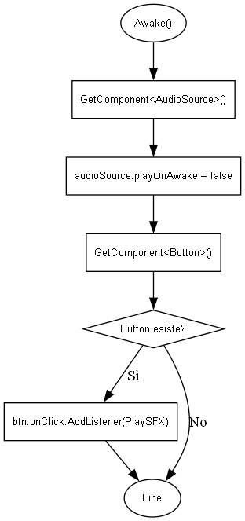
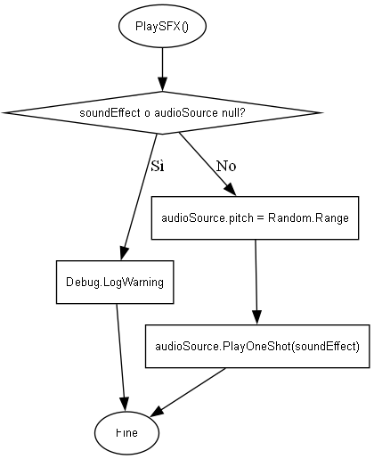
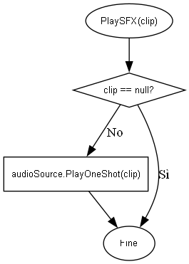

Gestisce la riproduzione degli effetti sonori (SFX). Assicura la presenza di un AudioSource e permette di riprodurre suoni con una leggera variazione di pitch per maggiore naturalezza.
More...
|
| void | PlaySFX () |
| | Riproduce il suono configurato con una leggera variazione casuale del pitch.
|
| void | PlaySFX (AudioClip clip) |
| | Riproduce immediatamente un AudioClip passato come parametro. Utile per riprodurre suoni dinamicamente da codice.
|
|
| AudioClip | soundEffect |
| | Clip audio utilizzata come effetto sonoro principale.
|
| float | pitchVariation = 0.1f |
| | Valore massimo di variazione del pitch applicato casualmente.
|
|
| void | Awake () |
| | Inizializzazione del gestore audio. Recupera l'AudioSource e collega automaticamente il metodo PlaySFX al bottone UI, se presente.
|
|
| AudioSource | audioSource |
| | Riferimento all'AudioSource associato all'oggetto.
|
Gestisce la riproduzione degli effetti sonori (SFX). Assicura la presenza di un AudioSource e permette di riprodurre suoni con una leggera variazione di pitch per maggiore naturalezza.
◆ Awake()
| void sfxmanager.Awake |
( |
| ) |
|
|
private |
Inizializzazione del gestore audio. Recupera l'AudioSource e collega automaticamente il metodo PlaySFX al bottone UI, se presente.

◆ PlaySFX() [1/2]
| void sfxmanager.PlaySFX |
( |
| ) |
|
Riproduce il suono configurato con una leggera variazione casuale del pitch.

◆ PlaySFX() [2/2]
| void sfxmanager.PlaySFX |
( |
AudioClip | clip | ) |
|
Riproduce immediatamente un AudioClip passato come parametro. Utile per riprodurre suoni dinamicamente da codice.

- Parameters
-
| clip | Clip audio da riprodurre. |
◆ audioSource
| AudioSource sfxmanager.audioSource |
|
private |
Riferimento all'AudioSource associato all'oggetto.
◆ pitchVariation
| float sfxmanager.pitchVariation = 0.1f |
Valore massimo di variazione del pitch applicato casualmente.
◆ soundEffect
| AudioClip sfxmanager.soundEffect |
Clip audio utilizzata come effetto sonoro principale.
The documentation for this class was generated from the following file:
- C:/Users/semer/Documents/GitHub/EscapeRoom/Assets/scripts/sfxmanager.cs